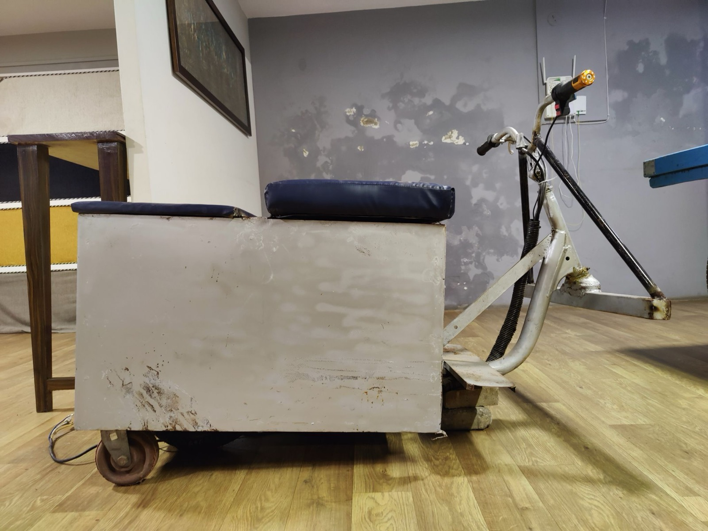

Mini Race Car
A 3D-printed RC car with dual-motor drive and custom steering, driven from a phone app.
- Role
- Designer & Builder
- Tools
- 3D printing, Blynk, servo & DC motors
- Focus
- Compact drivetrain & phone-based control
Video

01
Engineering
3D printed and tested the entire frame, with a 5:1 gear ratio and a custom steering configuration. A dual-motor setup improves torque performance over a single drive motor.
02
Integration
Built a custom application on the Blynk platform to control the servo and motors remotely from a phone, giving accurate steering and power delivery.
03
Constraints
Designed around an existing set of motors and a servo rather than choosing parts from scratch, and adapted the whole car to fit within 10 inches while achieving a 65° turning radius.
By the numbers
5:1gear reduction, with 2 drive motors
65°turning radius from custom steering
10 inoverall size limit
